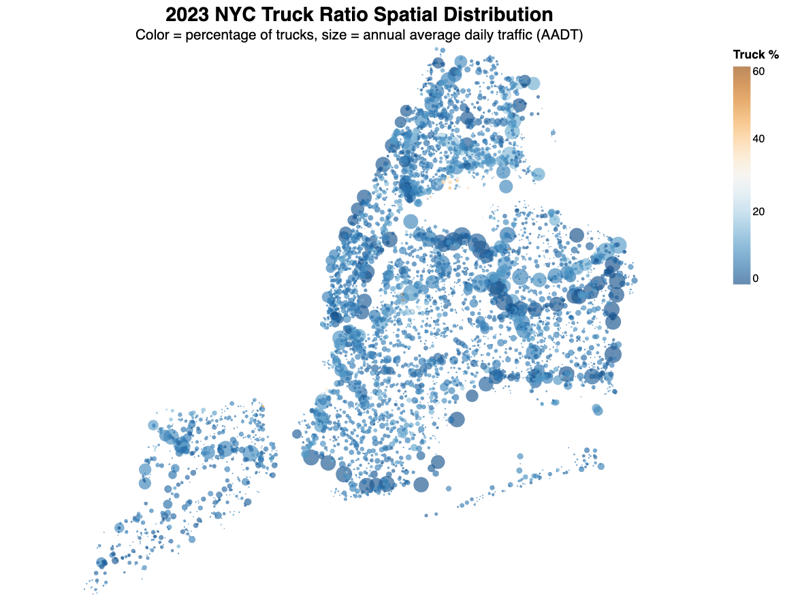
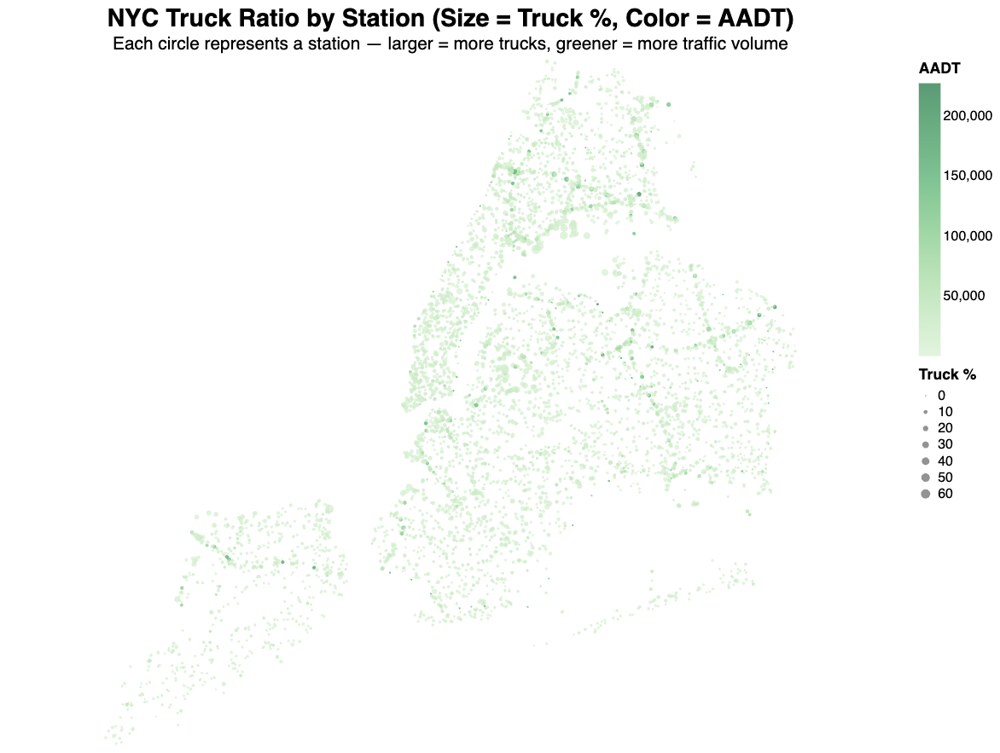
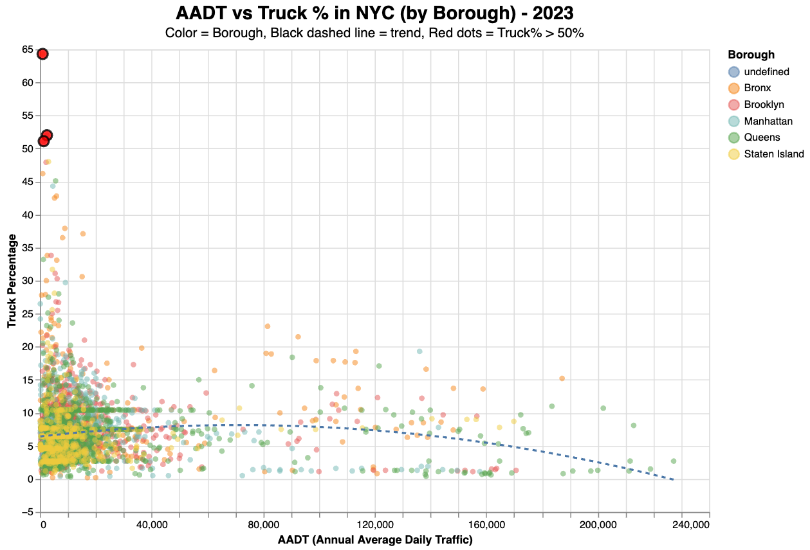
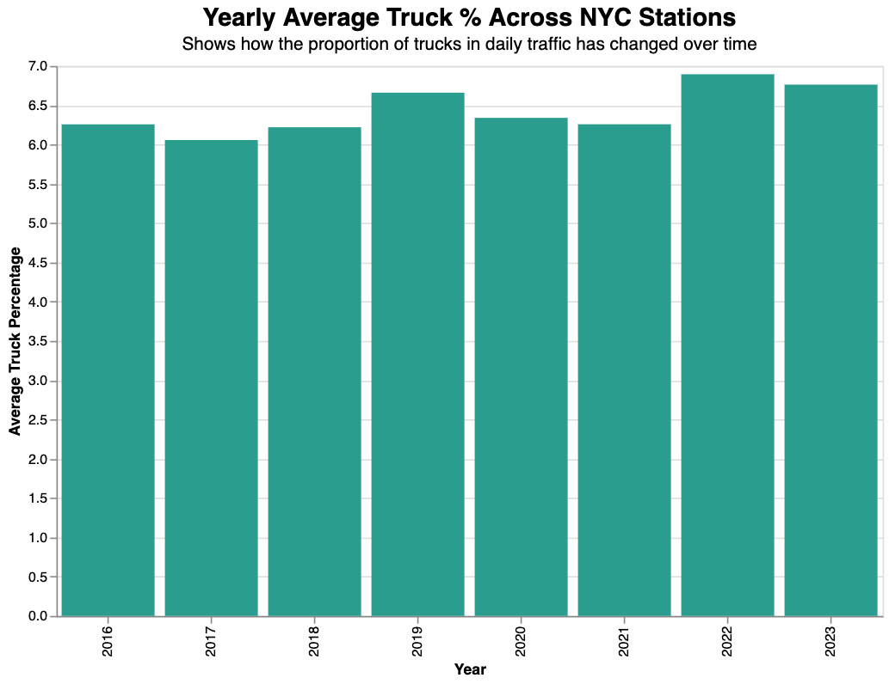
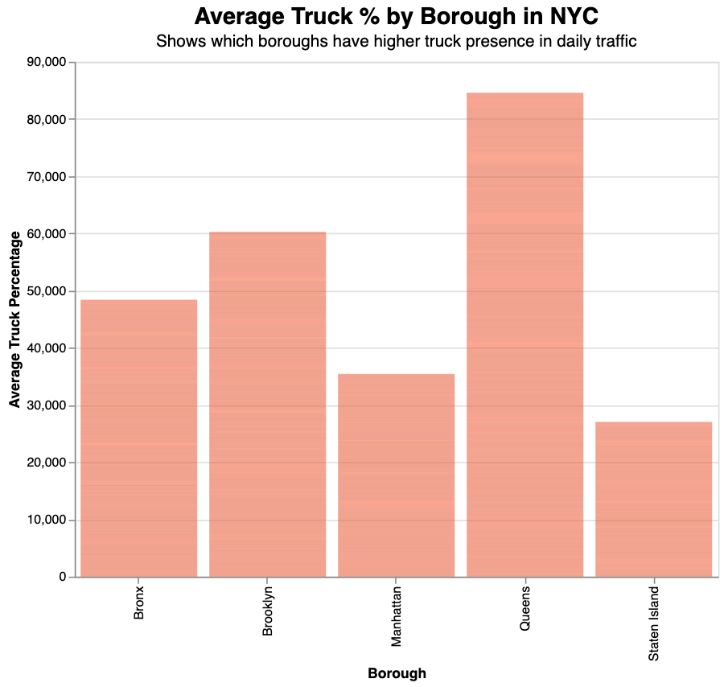
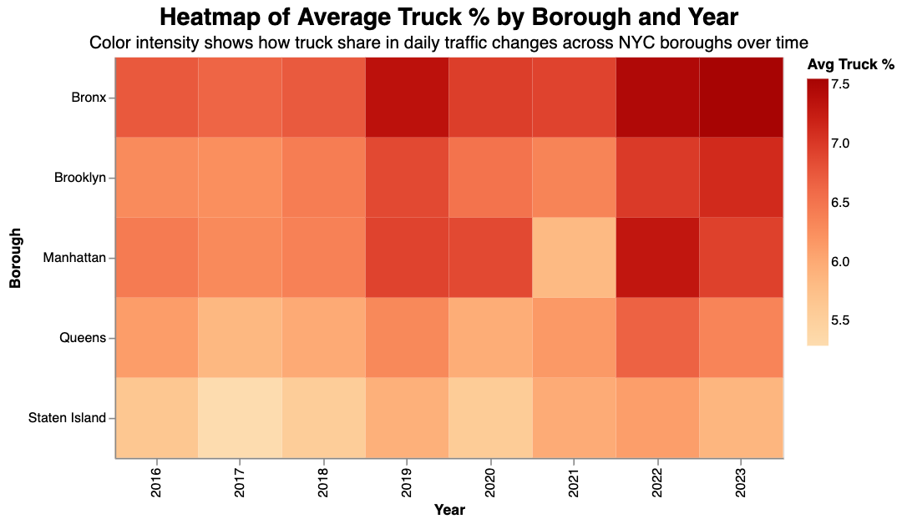

Analyzing Truck Traffic Patterns in New York City
Data Visualization Assignment 05 – Altair Charts in Google Colab
This project explores spatial and temporal patterns of truck traffic across New York City’s five boroughs using a multi-year dataset of AADT (Annual Average Daily Traffic) and truck percentage observations from street monitoring stations. Through a series of five Altair charts generated in Google Colab, the analysis highlights regional truck density, station-level traffic intensity, correlations between vehicle types, and changes during and after the pandemic. These visualizations support a deeper understanding of urban freight distribution and may inform traffic management and policy decisions.
All data cleaning, visualization, and analysis were conducted in this Google Colab notebook .
Chart 1: This line chart shows the annual traffic trends (AADT) for the top 10 stations with the highest average traffic volume in New York City. Most locations display steady or slightly increasing traffic from 2016 to 2019, followed by a sharp drop in 2020—likely due to COVID-19 lockdowns and reduced mobility. Traffic levels rebounded in 2021 and remained relatively stable through 2023, suggesting a gradual return to pre-pandemic activity across NYC’s busiest traffic corridors.
Chart 2-1: This map shows the distribution of truck traffic across New York City’s five boroughs in 2023. Each dot represents a traffic observation station, where the size indicates total traffic volume (AADT) and the color reflects the percentage of trucks. Most locations have low to moderate truck presence, with a few higher concentrations in areas like the Bronx and Staten Island. The chart highlights how truck activity is unevenly distributed across the city and does not necessarily align with overall traffic volume.
Chart 2-2: This map displays traffic stations across NYC, where circle size represents the percentage of trucks and color shows total traffic volume (AADT). Most stations have low truck percentages, but larger circles appear in areas like Staten Island and the Bronx, suggesting higher truck activity. The map highlights how truck-heavy locations don’t always match the busiest traffic areas.
Chart 3: This chart compares truck percentage with overall traffic volume (AADT) at NYC stations in 2023. Each point is a traffic station, colored by borough. The black dashed line shows a general downward trend: truck share tends to be lower at high-traffic locations. Red dots highlight a few stations with very high truck presence, often at low-volume sites—possibly tied to industrial or service roads. The pattern suggests truck usage in NYC is spatially uneven and not simply related to traffic volume.
Chart 4: This bar chart shows how the average proportion of trucks in daily traffic across NYC stations has changed over time. The truck percentage remained steady from 2016 to 2019, then increased during the pandemic years—peaking in 2021. This trend suggests that while overall traffic may have decreased during COVID-19, essential goods movement continued, increasing the relative presence of trucks. The values have remained slightly elevated since then, indicating a possible long-term shift in urban freight patterns.
Chart 5: This bar chart compares the average truck percentage across New York City’s five boroughs. Queens stands out with the highest truck presence in daily traffic, suggesting its role as a key freight corridor—likely due to its proximity to highways, airports, and industrial zones. Brooklyn and the Bronx also show elevated truck ratios, while Manhattan and Staten Island have relatively lower proportions.
Chart 6: This heatmap illustrates how the average truck percentage has changed over time across the five boroughs of New York City. Darker colors indicate higher truck presence in daily traffic. The Bronx consistently shows the highest truck ratio, reflecting its industrial character and major highway access. Interestingly, 2022 marks a notable spike across nearly all boroughs—likely linked to post-pandemic logistics and supply chain activity. Manhattan remains relatively stable, while Queens and Brooklyn show modest increases. This chart helps highlight borough-specific trends and shifts in freight activity that could inform localized infrastructure or policy responses.